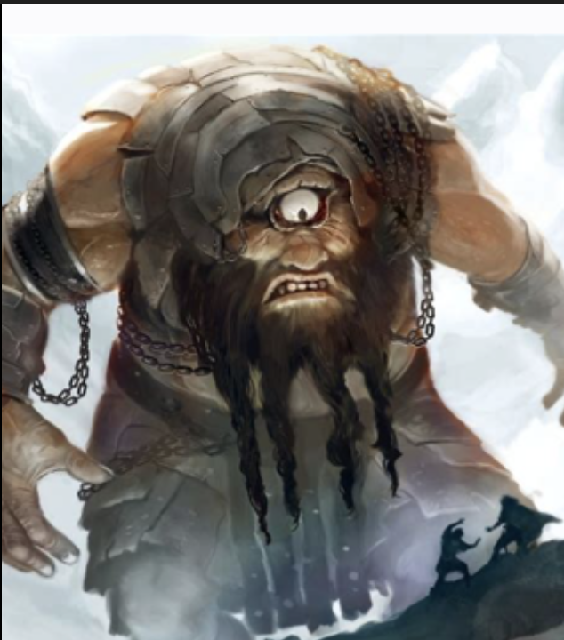

Nés de l’union d’Ouranos et de Gaia, les Cyclopes étaient des géants redoutables dotés d’un seul œil immense au centre du front. Leur apparence terrifiante effraya leur père, qui les enferma dans les profondeurs de la Terre.
Lorsque Cronos renversa Ouranos, il ne les libéra pas. Les Cyclopes restèrent prisonniers jusqu’à ce que Zeus, en guerre contre les Titans, décide de les délivrer.
Reconnaissants, les Cyclopes mirent leur puissance au service du jeune dieu. Dans leurs forges ardentes, ils façonnèrent la foudre de Zeus, arme décisive qui permit de vaincre les Titans. Ils forgèrent aussi le trident de Poseidon et le casque d’invisibilité d’Hadès.
Grâce à leur œuvre, l’ordre olympien fut établi.
Leur œil unique symbolise la concentration d’une puissance brute et primitive : une vision unique, perçante, comme l’éclair qui fend le ciel.
Ainsi, bien qu’ils soient souvent décrits comme sauvages, les Cyclopes furent essentiels à la naissance du règne des dieux de l’Olympe.